Современные устройства вывода изображения (дисплеи) имеют растровую природу. Отсюда возникает проблема репрезентации изображения на растровом устройстве (Рис.25). Например, разложение в растр отрезка может принимать следующие варианты: Один из методов разложения отрезка в растр состоит в решении дифференциального уравнения, описывающего этот процесс.
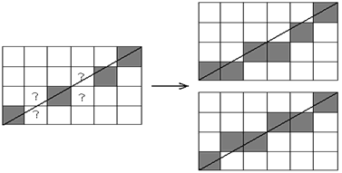
Рис. 25
Для прямой линии имеем:
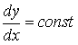
или
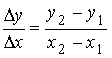
Решение последнего дифференциального уравнения представляется в виде:
yi +1 = yi + y,
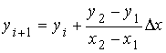
где (x1, y1) и (x2, y2) - начальная и конечная точка отрезка раскладываемого в растр.
Фактически уравнение представляет собой рекуррентное соотношение для последовательности значений y вдоль нужного отрезка.
Этот метод, используемый для разложения растровой графике отрезков, называется цифровым дифференциальным анализатором (ЦДА). В простом ЦДА, y либо x (большее из приращений) выбирается в качестве единицы растра.
Алгоритм, работающий во всех квадрантах
1. Концы отрезка (x1, y1) и (x2, y2) не совпадают.
integer - функция преобразования вещественного числа в целое.
Функция integer означает взятие целой части, то есть integer (- 8, 5)= - 9, а не -8.
В алгоритме используется именно такая функция.
sign- функция, возвращающая -1, 0, 1 для отрицательного, нулевого и положительного аргумента соответственно.
ПРОЦЕДУРА
Аппроксимируем длину отрезка
if abs(x2 - x1) abs(y2 - y1) then Длина = abs(x2 - x1) else Длина = abs(y2 - y1) end if
полагаем большее из приращений x, y равным единице растра
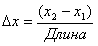
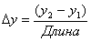
Округляем величины, а не отбрасываем дробную часть, использование знаковой функции делает алгоритм, пригодным для всех квадрантов .
x = x1 + 0. 5 sign(x) y = y1 + 0. 5 sign(y)
Начало основного цикла
i = 1
while (i Длина)
plot (integer(x), integer(y))
x = x + x
y = y + y
i = i + 1
end while
finish
Пример, иллюстрирующий работу алгоритма (Рис.26). Рассмотрим отрезок, проходящий
из точки с координатами (0,0) в точку с координатами (5,5). Используем алгоритм
ЦДА для разложения отрезка в растр.
Начальные условия:
x1=0, y1=0, y2=5, x2=5, Длина = 5, x = 1, y =1, x = 0. 5, y = 0. 5
Результаты пошагового выполнения основного цикла:
| i | Plot | x | y |
| 0.5 | 0.5 | ||
| 1 | (0, 0) | ||
| 1.5 | 1.5 | ||
| 2 | (1, 1) | ||
| 2.5 | 2.5 | ||
| 3 | (2, 2) | ||
| 3.5 | 3.5 | ||
| 4 | (3, 3) | ||
| 4.5 | 4.5 | ||
| 5 | (4, 4) | ||
| 5.5 | 5.5 |
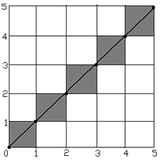
Рис. 26. Результат работы ЦДА в 1-квадранте
Заметим, что конечные точки отрезка определены точно и выбранные пикселы равномерно распределены вдоль отрезка. Внешний вид прямой вполне удовлетворителен.
Однако, если начальным значениям переменной i - сделать 0, вместо 1, то окажется активированным пиксел с координатами (5,5), что нежелательно. Если адрес пиксела задан целыми координатами левого нижнего угла, то активация этого пиксела даст явно неверную конечную точку отрезка (Рис.1).
Вдобавок, при вычерчивании серии последовательных отрезков пиксел (5,5) будет активирован дважды: в конце данного отрезка и в начале следующего.
Такой пиксел может выглядеть как более яркий или иметь иной (быть может, несоответствующий) цвет.
ПРИМЕР РАБОТЫ АЛГОРИТМА В 3- КВАДРАНТЕ
Отрезок: начало (0,0), конец (-8,-4) (Рис.27).
Начальные условия.
x1=0
x2= - 8
Длина = 8
y1=0
y2= - 4
x = - 1
y = - 0. 5
x = - 0. 5
y = - 0. 5
Результаты таковы :
| i | Plot | x | y |
| -0.5 | -0.5 | ||
| 1 | (-1,-1) | ||
| -1.5 | -1.5 | ||
| 2 | (-2, -1) | ||
| -2.5 | -1.5 | ||
| 3 | (-3, -2) | ||
| -3.5 | -2.0 | ||
| 4 | (-4, -2) | ||
| -4.5 | -2.5 | ||
| 5 | (-5, -3) | ||
| -5.5 | -3.0 | ||
| 6 | (-6, -3) | ||
| -6.5 | -3.5 | ||
| 7 | (-7, -4) | ||
| -7.5 | -4.0 | ||
| 8 | (-8, -4) | ||
| -8.5 | -4.5 |
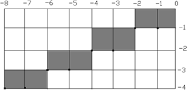
Рис. 27
Несмотря на то, что результаты, представленные на (Рис. 27) выглядят вполне приемлемыми, анализ отрезков, проведенных из т. (0, 0) в т. (-8, 4) и в т. (8, -4) показывает, что разложенный в растр отрезок лежит по одну сторону от реального, и что на одном из концов отрезка, появляется лишняя точка, то есть результат работы алгоритма зависит от ориентации. Следовательно, точность в конечных точках отрезка ухудшается.
Далее, если вместо взятия целой части, использовать округление до ближнего целого, то результаты снова получатся разными.
Таким образом, либо нужно использовать более сложный и более медленный алгоритм, либо надо отступится от требования максимальной точки аппроксимации.
Вдобавок предложенный алгоритм имеет тот недостаток, что он использует вещественную арифметику.
Алгоритм выбирает оптимальные растровые координаты для представления отрезка. В процессе работы одна из координат либо x, либо y (в зависимости от углового коэффициента) - изменяется на единицу. Изменение другой координаты (либо на 0, либо на 1) зависит от расстояния между действительным положением отрезка и ближайшими координатами сетки. Такое расстояние мы назовем ошибкой.
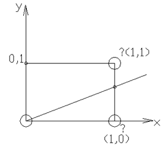
Рис. 28
Алгоритм построен так, что требуется проверять лишь знак этой ошибки. На рис. 28 это иллюстрируется для отрезка в первом октанте, т.е. для отрезка с угловым коэффициентом лежащим в диапазоне от 0 до 1 .
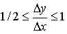(ошибка 0)
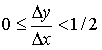(ошибка < 0)
Инициализировать ошибку в -1/2
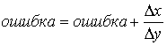
- Основная идея алгоритма Брезенхэма
Из рисунка можно заметить, что если угловой коэффициент отрезка больше чем 1/2, то его пересечение с прямой x = 1, будет расположено ближе к прямой y=1, чем к прямой y=0. Следовательно, точка растра с координатами (1,1) лучше аппроксимирует ход отрезка, чем т.(1,0) Если угловой коэффициент 1/2, то верно обратное.
Для углового коэффициента, равного 1/2, нет какого либо предпочтительного варианта. В данном случае алгоритм выбирает пиксел с координатами (1,1). Не все отрезки проходят через точки растра. Подобная ситуация представлена на (Рис.29), где отрезок с тангенсом угла наклона 3/8 сначала проходит через пиксел с координатами (0,0) и последовательно пересекает три пиксела.
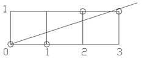
Рис. 29
Так как желательно проверять только знак ошибки, то она первоначально устанавливается равной "-1/2" . Таким образом, если угловой коэффициент отрезка больше или равен 1/2, то величина ошибки в следующей точке растра с координатами (1, 0) может быть вычислена как:
e = e + m, где m -угловой коэффициент.
В нашем случае при начальном значении ошибки "-1/2"
e = -1/2 + 3/8 = -1/8
Так как e < 0, то отрезок пройдет ниже середины пиксела. Следовательно пиксел на горизонтальном уровне лучше аппроксимирует положение отрезка, поэтому y не увеличивается. Аналогично вычисляем ошибку .
e = -1/8 + 3/8 = 1/4 в т. растра (2, 0)
Теперь e >0, а значит отрезок пройдет выше средней точки. Растровый элемент (2,1) со следующей по величине координатой y лучше аппроксимирует положение отрезка. Следовательно, y увеличивается на 1. Прежде чем рассматривать следующий пиксел, необходимо откорректировать ошибку вычитанием из нее 1.
e = 1/4 - 1 = -3/4
Продолжение вычислений для следующего пиксела дает:
e = -3/4 + 3/8 = -3/8
Так как e 0, то y не увеличивается. Из всего сказанного следует, что ошибка - это интервал, отсекаемый по оси y, рассматриваем отрезок в каждом растровом элементе относительно "-1/2" .
Рассмотрим алгоритм Брезенхема для первого октанта, т.е. для случая 0<=y<=x.
Алгоритм Брезенхема разложения в растр отрезка для первого октанта
Предполагается, что концы отрезка (x1 y1) и (x2 y2) не совпадает.
integer - функция преобразования в целое
x1 y1 x1 y1 - целые
е - вещественное
Инициализация переменных:
x = x1 x = x2 - x1
y = y1 y = y2 - y1
Инициализация ошибки е с поправкой на 1/2 пиксела.
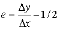
Начало основного цикла.
for i = 1 to x
Plot (x, y)
while (e 0)
y = y + 1
e = e - 1
end while
x = x - 1
 next i
finish.
next i
finish.
Блок схема алгоритма
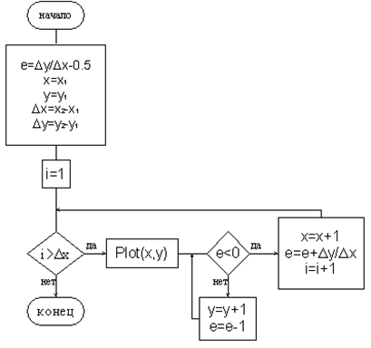
Пример: P = (0,0), P = (5,5)
Начальные условия: x = 0 x = 5 e = 1 - 1/2 = 1/2
y = 0 y = 5
Результаты пошагового выполнения основного цикла (Рис.30).
| i | Plot | e | x | y |
| 1/2 | 0 | 0 | ||
| 1 | (0, 0) | |||
| -1/2 | 0 | 1 | ||
| 1/2 | 1 | 1 | ||
| 2 | (1, 1) | |||
| -1/2 | 1 | 2 | ||
| 1/2 | 2 | 2 | ||
| 3 | (2, 2) | |||
| 1/2 | 3 | 3 | ||
| 4 | (3, 3) | |||
| 1/2 | 4 | 4 | ||
| 5 | (4, 4) | |||
| 1/2 | 5 | 5 |
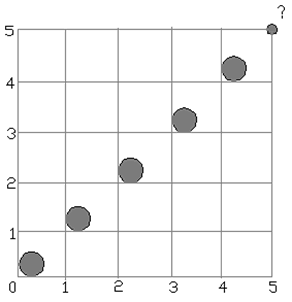
Рис. 30
Заметим, что точка растра с координатами (5,5) не активирована. Эту точку можно активировать изменив условия цикла: for-next на 0 to x .
Активацию точки (0, 0) можно устранить, если поставить оператор Plot непосредственно перед строкой next j.
Целочисленный алгоритм Брезенхема для первого октанта
Начальные условия: P1 = (x1, y1) P2 = (x2,y2) не совпадают, все переменные целые.
x = x1
y = y1
x = x2 - x1
y = y2 - y1
Инициализируем e с поправкой на 1/2 пиксел.
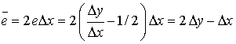
Начало основного цикла.
for i = 1 to x Plot (x, y) while (e 0) y = y +1 e = e - 2 x end while x = x + 1 e = e - 2 y next i finishПример (Рис.31).
х = 0 х = 7 y = 3 Н.У, (0, 0) ->(7, 3)
| i | Plot | e | x | y |
| -1 | 0 | 0 | ||
| 1 | (0, 0) | |||
| -1 < 0 | 1 | 0 | ||
| 5 | ||||
| 2 | (1, 0) | |||
| 5 > 0 | 1 | 1 | ||
| -9 > 0 | 2 | 1 | ||
| -3 | ||||
| 3 | (2, 1) | |||
| -3 < 0 | 3 | 1 | ||
| 3 | ||||
| 4 | (3, 1) | 3 > 0 | 3 | 2 |
| -11 < 0 | 4 | 2 | ||
| -5 | ||||
| 5 | (4, 2) | |||
| -5 < 0 | 5 | 2 | ||
| 1 | ||||
| 6 | (5, 2) | |||
| 1 > 0 | 5 | 3 | ||
| -13<0 | 6 | 3 | ||
| -7 | ||||
| 7 | (6.3) |
Блок схема алгоритма
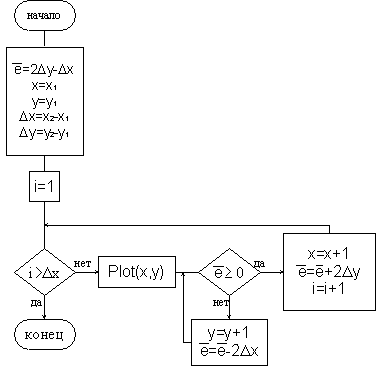
Чтобы реализация алгоритма Брезенхема была полной, необходимо обрабатывать отрезки во всех октантах. Модификацию легко сделать, учитывая в алгоритме номер квадранта, в котором лежит отрезок и его угловой коэффициент.
Когда абсолютная величина углового коэффициента больше 1, у - постоянно изменяется на 1, а критерий ошибки Брезенхема используется для принятия решения об изменении величины х.
Выбор постоянно изменяющийся (на +1 или -1) координаты зависят от квадранта (Рис. 32).
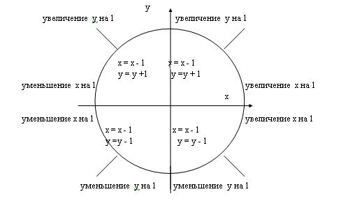
Рис. 32
Обобщенный целочисленный алгоритм Брезенхема для всех квадрантов
Начальные условия:
Точки P1 = (x1, y1) P2 = (x2,y2) не совпадают.
Переменные целые
Sign возвращает -1, 0, 1 для a < 0, a = 0, a > 0 соответственно.
Инициализация переменных
x = x1 y = y1 x = abs (x2 - x1) y = abs (y2 - y1) S1 = Sign(x2 - x1) S2 = Sign(y2 - y1)
Обмен значений x и y в зависимости от углового коэффициента наклона отрезка.
if y > x then Врем = x x = y y = Врем Обмен = 1 else Обмен = 0 end if
Инициализация e с поправкой на 1/2 пиксела
e =2y - x
Основной цикл
for i=1 to x Plot (x, y) while (e >= 0) if Обмен = 1 then x = x + S1 else y = y + S2 end if e= e - 2 x end while (e >= 0) if Обмен = 1 then y = y + S2 else x = x + S1 end if e = e - 2 x next i finish
Пример: Обобщенный алгоритм Брезенхема (Рис. 33).
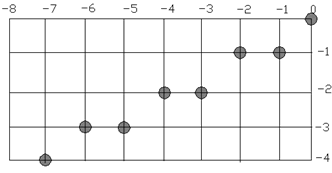
Рис. 33
Начальные условия: P1 = (0,0) P2 = (-8,-4)
x=0 x=8 S1= -1 Обмен=0
y=0 y=0 S2= -1 e = 0
| i | Plot | e | x | y |
| 0 | 0 | 0 | ||
| 1 | (0, 0) | |||
| -16 | 0 | -1 | ||
| -8 | -1 | -1 | ||
| 2 | (-1, -1) | |||
| 0 | -8 | -1 | ||
| 3 | (-2, -1) | |||
| -16 | -2 | -2 | ||
| -8 | -3 | -2 | ||
| 4 | (-3, -2) | |||
| 0 | -4 | -2 | ||
| 5 | (-4, -2) | |||
| -16 | -4 | -3 | ||
| -8 | -5 | -3 | ||
| 6 | (-5, -3) | |||
| 0 | -6 | -3 | ||
| 7 | (-6, -3) | |||
| -16 | -6 | -4 | ||
| -8 | -7 | -4 | ||
| 8 | (-7, -4) |
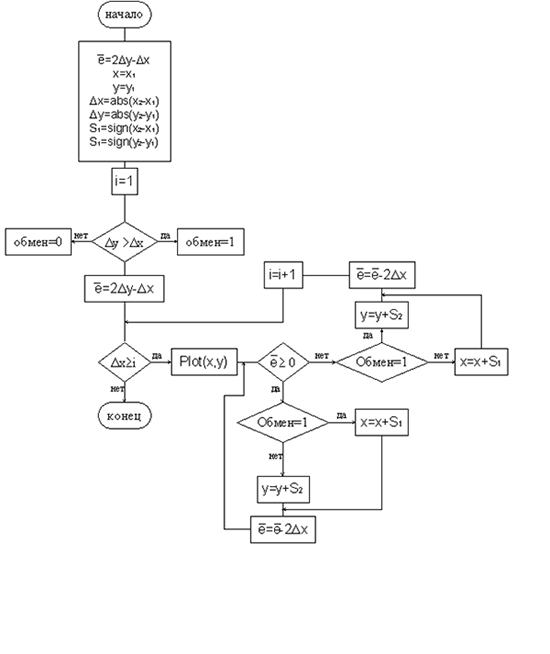